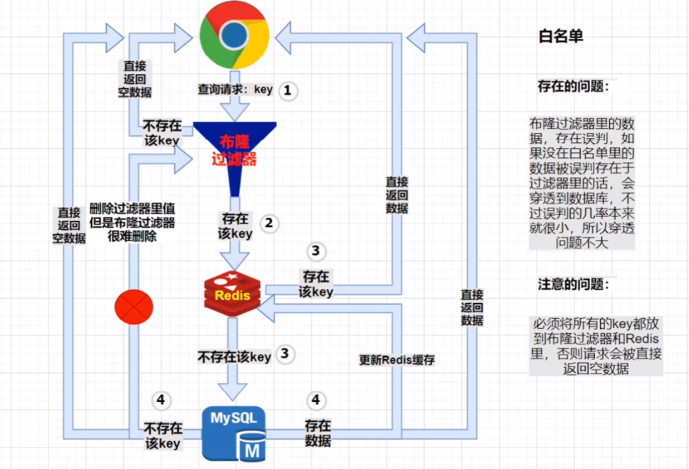
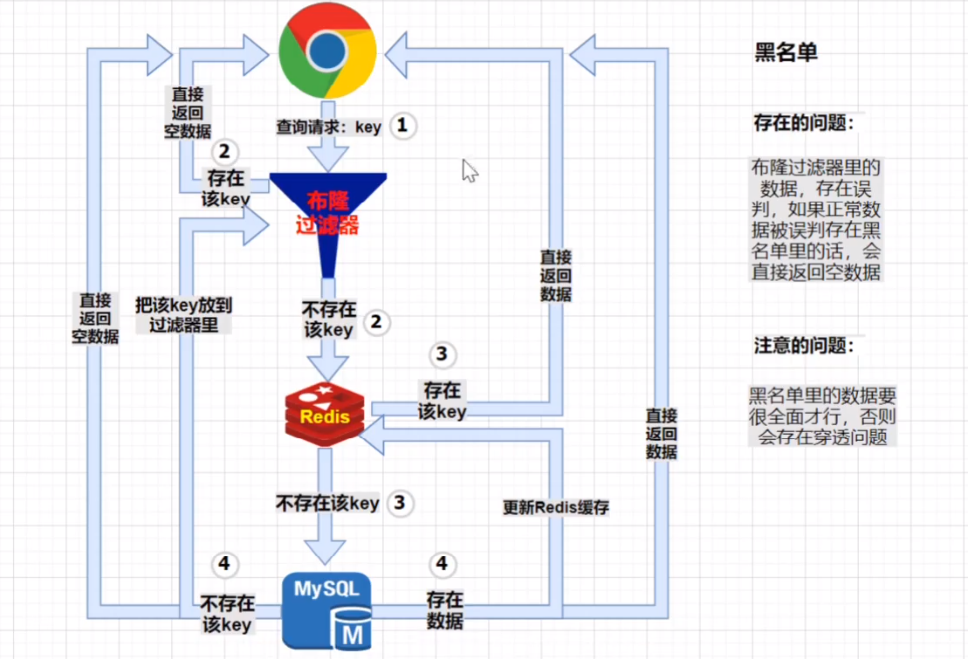

Redis缓存雪崩/穿透/击穿
当一个系统为 Server => Redis => DB 的架构，请求先在Redis中查找数据，查找失败则在数据库中查找，在高并发场景下，以下几种情形容易造成系统宕机。
缓存雪崩
统一时间大量的缓存key失效，造成数据库响应不即时。
解决方案:
- 不设置key失效
- 将key平均分布在不同节点上
- 设置缓存刷新的定时任务
缓存穿透
大量请求Redis中没有的数据，请求直接穿过Redis打到数据库。常用于黑客攻击，例如数据库中不存在id为-1的项，故意构造的id=-1的查询请求。
解决方案:
- IP黑名单
- 将结果不存在的情况也缓存到Redis
- server参数合法性检验
- 布隆过滤器
缓存击穿
大量请求某个热点key，当这个key突然消失，大量请求直接打到数据库上。
解决方案:
- key永远不过期
- 分布式锁(zookeeper) 只让一个线程抢到锁，其他进程sleep，然后这个进程执行查询并缓存到Redis
布隆过滤器(BloomFilter)
布隆过滤器是一个很长的二进制向量和一系列随机映射函数（哈希函数）。
布隆过滤器可以用于检索一个元素是否在一个集合中。它的优点是空间效率和查询时间都远远超过一般的算法，缺点是有一定的误识别率和删除困难。
布隆过滤器可以用于解决缓存穿透。在具体使用时需要设置误判率(fpp)。误判率设置越低，占用空间越大，hash函数个数越多，性能越差。
根据把所有合法的或者不合法的内容放入布隆过滤器，有两种应用方式：白名单/黑名单：


黑名单方式下，一开始黑名单为空，需要在逐渐被攻击的过程中逐步完善黑名单。在完善黑名单的过程中依然有缓存穿透被攻击的风险。
布隆过滤器业务场景：
- 防止已读的推荐内容的重复推送
- 好友白名单判断